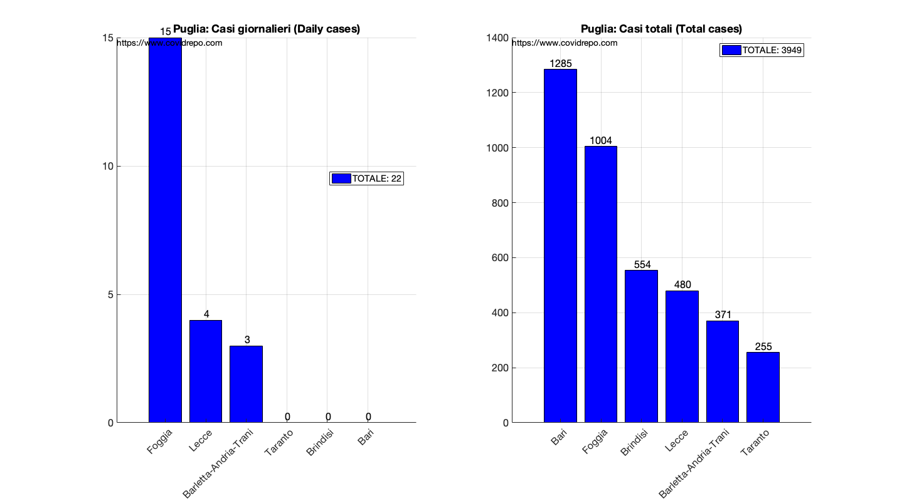

COVID19 DATA PROVINCES AND REGIONS.
This report is related to data processing on the spread of COVID-19 in Italy and single regions/provinces. Data are provided by the Italian Civil Protection:
"https://github.com/pcm-dpc/COVID-19"
See all reports and articles: COVIDREPO.COM
Author: Marcello Chiarello
marcello.chiarello@outlook.com
Contents
DATA PUGLIA
RUN DATA: 28-Apr-2020
Tabella casi giornalieri per la regione Puglia(Daily cases for the region)
TABLE =
6×3 table
province casiGiornalieri casiTotali
_______________________ _______________ __________
"Bari" 0 1285
"Barletta-Andria-Trani" 3 371
"Brindisi" 0 554
"Foggia" 15 1004
"Lecce" 4 480
"Taranto" 0 255
"Casi giornalieri totali:" "22" " (Region daily cases)"
"Casi regione totali:" "3949" " (Region total cases)"
https://marcelchiarello.github.io/showdata/
Summary =
2×8 table
Casi Attualmente_positivi Morti Guariti Terapia_intensiva Ospedalizzati Ricoverati_con_sintomi Tamponi
____ ____________________ _____ _______ _________________ _____________ ______________________ _______
Totali 3980 2919 407 654 51 499 448 58496
Giornalieri 22 7 2 13 0 -1 -1 1520
Nota: ci sono delle incongruenze tra la somma dei valori delle varie province
ed i valori regionali (provenienti da due diversi file dello stesso database)
 


DATA LOMBARDIA
RUN DATA: 28-Apr-2020
Tabella casi giornalieri per la regione Lombardia(Daily cases for the region)
TABLE =
12×3 table
province casiGiornalieri casiTotali
_______________________ _______________ __________
"Bergamo" 46 11196
"Brescia" 92 12691
"Como" 78 3154
"Cremona" 22 5993
"Lecco" 18 2248
"Lodi" 11 2947
"Mantova" 8 3131
"Milano" 278 18837
"Monza e della Brianza" 121 4637
"Pavia" 99 4228
"Sondrio" 9 1141
"Varese" 72 2568
"Casi giornalieri totali:" "854" " (Region daily cases)"
"Casi regione totali:" "72771" " (Region total cases)"
https://marcelchiarello.github.io/showdata/
Summary =
2×8 table
Casi Attualmente_positivi Morti Guariti Terapia_intensiva Ospedalizzati Ricoverati_con_sintomi Tamponi
_____ ____________________ _____ _______ _________________ _____________ ______________________ _______
Totali 74348 35744 13575 25029 655 7935 7280 351423
Giornalieri 869 303 126 440 -25 -270 -245 8573
Nota: ci sono delle incongruenze tra la somma dei valori delle varie province
ed i valori regionali (provenienti da due diversi file dello stesso database)


DATA VENETO
RUN DATA: 28-Apr-2020
Tabella casi giornalieri per la regione Veneto(Daily cases for the region)
TABLE =
7×3 table
province casiGiornalieri casiTotali
_________ _______________ __________
"Belluno" 1 1061
"Padova" 9 3836
"Rovigo" 2 424
"Treviso" 7 2483
"Venezia" 52 2418
"Verona" 30 4556
"Vicenza" 25 2596
"Casi giornalieri totali:" "126" " (Region daily cases)"
"Casi regione totali:" "17374" " (Region total cases)"
https://marcelchiarello.github.io/showdata/
Summary =
2×8 table
Casi Attualmente_positivi Morti Guariti Terapia_intensiva Ospedalizzati Ricoverati_con_sintomi Tamponi
_____ ____________________ _____ _______ _________________ _____________ ______________________ _______
Totali 17708 8601 1408 7699 120 1187 1067 328218
Giornalieri 129 -259 64 324 -3 -35 -32 8191
Nota: ci sono delle incongruenze tra la somma dei valori delle varie province
ed i valori regionali (provenienti da due diversi file dello stesso database)


DATA PIEMONTE
RUN DATA: 28-Apr-2020
Tabella casi giornalieri per la regione Piemonte(Daily cases for the region)
TABLE =
8×3 table
province casiGiornalieri casiTotali
______________________ _______________ __________
"Alessandria" 47 3318
"Asti" 63 1519
"Biella" 9 961
"Cuneo" 10 2417
"Novara" 26 2244
"Torino" 240 12564
"Verbano-Cusio-Ossola" 3 999
"Vercelli" 2 1095
"Casi giornalieri totali:" "400" " (Region daily cases)"
"Casi regione totali:" "25117" " (Region total cases)"
https://marcelchiarello.github.io/showdata/
Summary =
2×8 table
Casi Attualmente_positivi Morti Guariti Terapia_intensiva Ospedalizzati Ricoverati_con_sintomi Tamponi
_____ ____________________ _____ _______ _________________ _____________ ______________________ _______
Totali 25450 15506 2936 7008 202 2903 2701 144531
Giornalieri 352 -2 58 296 -12 -141 -129 5183
Nota: ci sono delle incongruenze tra la somma dei valori delle varie province
ed i valori regionali (provenienti da due diversi file dello stesso database)


DATA EMILIA ROMAGNA
RUN DATA: 28-Apr-2020
Tabella casi giornalieri per la regione Emilia-Romagna(Daily cases for the region)
TABLE =
9×3 table
province casiGiornalieri casiTotali
____________________ _______________ __________
"Bologna" 72 4263
"Ferrara" 4 909
"Modena" 31 3609
"Parma" 10 3122
"Piacenza" 92 3918
"Ravenna" 8 978
"Reggio nell'Emilia" 8 4593
"Rimini" 20 1973
"Forli-Cesena" 7 1549
"Casi giornalieri totali:" "252" " (Region daily cases)"
"Casi regione totali:" "24914" " (Region total cases)"
https://marcelchiarello.github.io/showdata/
Summary =
2×8 table
Casi Attualmente_positivi Morti Guariti Terapia_intensiva Ospedalizzati Ricoverati_con_sintomi Tamponi
_____ ____________________ _____ _______ _________________ _____________ ______________________ _______
Totali 24914 12003 3472 9439 228 2802 2574 172589
Giornalieri 252 -222 41 433 -19 -85 -66 7610
Nota: ci sono delle incongruenze tra la somma dei valori delle varie province
ed i valori regionali (provenienti da due diversi file dello stesso database)


DATA CAMPANIA
RUN DATA: 28-Apr-2020
Tabella casi giornalieri per la regione Campania(Daily cases for the region)
TABLE =
5×3 table
province casiGiornalieri casiTotali
___________ _______________ __________
"Avellino" 11 451
"Benevento" 0 177
"Caserta" 1 417
"Napoli" 16 2405
"Salerno" 4 656
"Casi giornalieri totali:" "32" " (Region daily cases)"
"Casi regione totali:" "4106" " (Region total cases)"
https://marcelchiarello.github.io/showdata/
Summary =
2×8 table
Casi Attualmente_positivi Morti Guariti Terapia_intensiva Ospedalizzati Ricoverati_con_sintomi Tamponi
____ ____________________ _____ _______ _________________ _____________ ______________________ _______
Totali 4380 2802 358 1220 33 577 544 70566
Giornalieri 31 -75 6 100 -4 -1 3 1839
Nota: ci sono delle incongruenze tra la somma dei valori delle varie province
ed i valori regionali (provenienti da due diversi file dello stesso database)


DATA SICILIA
RUN DATA: 28-Apr-2020
Tabella casi giornalieri per la regione Sicilia(Daily cases for the region)
TABLE =
9×3 table
province casiGiornalieri casiTotali
_______________ _______________ __________
"Agrigento" 2 135
"Caltanissetta" 10 158
"Catania" 10 971
"Enna" 2 404
"Messina" 0 533
"Palermo" 9 470
"Ragusa" 0 89
"Siracusa" 0 221
"Trapani" 2 139
"Casi giornalieri totali:" "35" " (Region daily cases)"
"Casi regione totali:" "3120" " (Region total cases)"
https://marcelchiarello.github.io/showdata/
Summary =
2×8 table
Casi Attualmente_positivi Morti Guariti Terapia_intensiva Ospedalizzati Ricoverati_con_sintomi Tamponi
____ ____________________ _____ _______ _________________ _____________ ______________________ _______
Totali 3120 2143 232 745 34 462 428 73008
Giornalieri 35 20 1 14 -1 -13 -12 2358
Nota: ci sono delle incongruenze tra la somma dei valori delle varie province
ed i valori regionali (provenienti da due diversi file dello stesso database)


DATA ABRUZZO
RUN DATA: 28-Apr-2020
Tabella casi giornalieri per la regione Abruzzo(Daily cases for the region)
TABLE =
4×3 table
province casiGiornalieri casiTotali
__________ _______________ __________
"Chieti" 28 751
"L'Aquila" 2 244
"Pescara" -4 1270
"Teramo" -1 634
"Casi giornalieri totali:" "25" " (Region daily cases)"
"Casi regione totali:" "2899" " (Region total cases)"
Error using horzcat
Dimensions of arrays being concatenated are not consistent.
Error in bar2 (line 13)
bar([zeros(1,length(py)),ny],'g')
Error in RUN_REGIONE (line 67)
bar2(TABLE.province,TABLE.casiGiornalieri,[regione ': Casi giornalieri (Daily cases)']);
Error in RUN_DATA_PROVINCE (line 56)
RUN_REGIONE(ALLDATA,'Abruzzo',0);